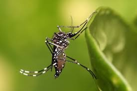

<!DOCTYPE html> 
<html>
<head> 
<meta name="viewport" content="width=device-width, initial-scale=1.0, maximum-scale=1.0, user-scalable=no;" charset="utf-8"/>


<title>Dengu - Precautions and Treatment</title>

<link href="/WhatsDengu/jquery-mobile/jquery.mobile-1.0.min.css" rel="stylesheet" type="text/css"/>
<script src="/WhatsDengu/jquery-mobile/jquery-1.6.4.min.js" type="text/javascript"></script>
<script src="/WhatsDengu/jquery-mobile/jquery.mobile-1.0.min.js" type="text/javascript"></script>
 <script type="text/javascript" charset="utf-8" src="phonegap.js"></script>
        <script type="text/javascript">

        function onBodyLoad()
        {       
            document.addEventListener("deviceready", onDeviceReady, false);
        }

        function onDeviceReady()
        {
            /** do your thing!
            navigator.notification.alert("PhoneGap is working")  **/
			this.deviceReady = true;
        }

        </script>
</head> 
<body onload="onBodyLoad()">


<div data-role="page" id="home">
	<div data-role="header" >
		<h1>&nbsp;डेंगू क्या है Whats' Dengu?</h1>
  </div>

	<div data-role="content" >
	  <p>अपनी भाषा चुने / Choose your Language </p>
	  <ul data-role="listview">
          <li><a href="#hindimenu">हिन्दी</a></li>
		  <li><a href="#englishmenu">English</a></li>
	  </ul>		
	</div>
	<div data-role="footer">
		<h4>नवभारत टाईम्स से साभार</h4>
	</div>
</div>


<div data-role="page" id="hindimenu">
	<div data-role="header">
		<h1>डेन्गू से संबन्धित जानकारी</h1>
               
    </div>
    
       <div data-role="navbar">
     <ul>
      <li><a href="#home" data-icon="home">Home</a></li>  
       <li><a href="#home" data-icon="arrow-r">Back</a></li> 
        <li><a href="#whatsdengu-h" data-icon="arrow-r">Next</a></li>
      </ul>     
    </div>
	
	<div data-role="content">	
		<ul data-role="listview">
			<li><a href="#whatsdengu-h">डेन्गू क्या और क्यों?</a></li>
            <li><a href="#prevention-h">इलाज से बचाव बेहतर</a></li>
            <li><a href="#immunity-h">रोग प्रतिरोधक क्षमता बढायें </a> </li>
            <li><a href="#tests-h">डेन्गू के टैस्ट </a> </li>
            <li> <a href="#kinds-h"> डेन्गू के प्रकार </a></li>
            <li> <a href="#treatment-h">इलाज और धैर्य </a></li>
            <li> <a href="#experience-h">अनुभव </a></li>
            <li><a href="#bloodbank-h">ब्लड बैंक</a></li>
            <li><a href="#ayurvedic-h">आयुर्वेदिक इलाज</a></li>
            <li><a href="#images">एडीज मच्छरों की छवियाँ</a></li>
            </ul>		
	</div>
	<div data-role="footer">
		<h4>अपने सुझाव मुझे इस पते पर भेजे : dpjindal@gmail.com</h4>
	</div>
</div>


<div data-role="page" id="whatsdengu-h">
	<div data-role="header">
			<h1>डेन्गू क्या और क्यों</h1>
 </div>
    <div data-role="navbar">
     	<ul>  
         <li><a href="#home" data-icon="home">Home</a></li>       
        <li><a href="#hindimenu" data-icon="arrow-l">Back</a></li>
        <li><a href="#prevention-h" data-icon="arrow-r">Next</a></li>
      	</ul>     
     
	</div>
	<div data-role="content"><strong>कहीं यह बुखार डेंगू तो नही?</strong>
<ul>
      <li> डेंगू वाले मच्छर के किसी इंसान को काटने के बाद डेंगू का वायरस इंसान के ब्लड में 2-7 दिनों तक रहता है। </li>
	    <li>डेंगू बुखार के लक्षण मच्छर के काटने के 4-7 दिनों में दिखते हैं। कभी-कभी इसमें 14 दिनों का वक्त भी लगता है। </li>
	    <li> बुखार अक्सर तेज होता है और दिन में 4-5 बार आता है।</li>
	    <li>डेंगू बुखार तकरीबन 7-10 दिनों तक बना रहता है और अपने आप ठीक हो जाता है। बुखार से प्रभावित कुल लोगों में से 10 फीसदी को ही हॉस्पिटल ले जाने की जरूरत होती है।</li>
	    <li>डेंगू के सामान्य लक्षण हैं: बुखार, तेज़ बदन दर्द, सिर दर्द खास तौर पर आंखों के पीछे, शरीर पर दाने आदि। </li>
	    <li>डेंगू ऐसा भी हो सकता है कि इसके लक्षण न उभरें। ऐसे मरीज़ का टेस्ट करने पर डेंगू पॉजिटिव आता है लेकिन वह खुद-ब-खुद बिना किसी इलाज़ के ठीक हो जाता है।</li>
	    <li> दूसरी तरह का डेंगू बीमारी के लक्षणों वाला होता है। यह भी तीन किस्म का होता है: क्लासिकल डेंगू फीवर, डेंगू हेमरेजिक फीवर और डेंगू शॉक सिंड्रोम। </li>
	    <li> क्लासिकल डेंगू फीवर एक नॉर्मल वायरल फीवर है। इसमें तेज बुखार, बदन दर्द, तेज सिर दर्द, शरीर पर दाने जैसे लक्षण दिखते हैं। यह डेंगू 5-7 दिन के सामान्य इलाज से ठीक हो जाता है। </li>
	    <li> डेंगू हेमरेजिक फीवर थोड़ा खतरनाक साबित हो सकता है। इसमें प्लेटलेट और W.B.C. की संख्या कम होने लगती है। नाक और मसूढ़ों से खून आना, शौच या उलटी में खून आना या स्किन पर गहरे नीले-काले रंग के चकत्ते जैसे लक्षण भी हो सकते हैं। </li>
	    <li> डेंगू शॉक सिंड्रोम में मरीज धीरे-धीरे होश खोने लगता है, उसका बीपी और नब्ज एकदम कम हो जाती है और तेज बुखार के बावजूद स्किन ठंडी लगती है।</li>
	    <li>डेंगू मच्छर धर्म निरपेक्ष, शर्म निरपेक्ष और शिकार निरपेक्ष है। कृपया बचकर रहें!</li>
      </ul>
	  <p><strong>क्या है बुखार </strong></p>
	  <ul>
	    <li> जब हमारे शरीर पर कोई बैक्टिरिया या वायरस हमला करता है तो हमारा शरीर अपने आप ही उसे मारने की कोशिश करता है। इसी मकसद से शरीर जब अपना टेम्प्रेचर बढ़ाता है तो उसे ही बुखार कहा जाता है। जब भी शरीर का टेम्प्रेचर नॉर्मल (98.3) से बढ़ जाए तो वह बुखार माना जाएगा। आमतौर पर छोटे बच्चों को बुखार होने पर उनके हाथ-पांव तो ठंडे रहते हैं लेकिन माथा और पेट गर्म रहते हैं इसलिए उनके पेट से उनका बुखार चेक किया जाता है। कई बार बुखार 104-105 डिग्री फॉरनहाइट तक भी पहुंच जाता है।	      </li>
	    <li>कोई मच्छर काट ले तो टेंशन में न आएं। हर मच्छर डेंगू वाला नहीं होता। बुखार आ जाए तो भी घबराने की जरूरत नहीं। हर बुखार डेंगू का नहीं होता। डेंगू हो भी जाए तो पैनिक न हों। </li>
	    <li>डेंगू में सिर्फ 1 फीसदी माले ही रिस्की होते हैं। बुखार का मैनेजमेंट घर में करें। डॉक्टर से इलाज कराएं। जब तक डॉक्टर न कहे, अस्पताल में भर्ती न हों</li>
      </ul>
  </div>
	<div data-role="footer">
		<h4>अपने सुझाव मुझे इस पते पर भेजे : dpjindal@gmail.com</h4>
	</div>
</div>


<div data-role="page" id="prevention-h">	
	<div data-role="header">
		<h1>इलाज से बचाव बेहतर</h1>
         
     </div>
         
     <div data-role="navbar">
     	<ul>  
         <li><a href="#home" data-icon="home">Home</a></li>      
        <li><a href="#whatsdengu-h" data-icon="arrow-l">Back</a></li>
        <li><a href="#immunity-h" data-icon="arrow-r">Next</a></li>
      	</ul>     
    </div>
	
	<div data-role="content">
	  <ul>
	    <li> आउटडोर में पूरी बांह की शर्ट, बूट, मोजे और फुल पैंट पहनें। खासकर बच्चों के लिए इस बात का जरूर ध्यान रखें। </li>
        <li> मच्छर गाढ़े रंग की तरफ आकर्षित होते हैं इसलिए हल्के रंग के कपड़े पहनें। </li>
        <li> तेज महक वाली परफ्यूम लगाने से बचें क्योंकि मच्छर किसी भी तरह की तेज महक की तरफ आकर्षित होते हैं।</li>
        <li> कमरे में मच्छर भगानेवाले स्प्रे, मैट्स, कॉइल्स आदि का प्रयोग करें। मस्किटो रेपलेंट को जलाते समय सावधानी बरतें। इन्हें जलाकर कमरे को 1-2 घंटे के लिए बंद कर दें। सोने से पहले खिड़की-दरवाजे खोल लें। खिड़की, दरवाजे बंद रखेंगे तो सांस की बीमारी हो सकती है। </li>
        <li> घर की मेन एंट्रेंस के बाहर लगी ट्यूब लाइट के पास मस्किटो रेपलेंट (गुडनाइट, ऑलआउट आदि) जलाकर रखें। इससे गेट खुलने पर अंदर आनेवाले मच्छरों को रोका जा सकेगा। आजकल इसे 24 घंटे जलाकर रखें ताकि मच्छर को जगह न मिले। </li>
        <li> सोने से पहले हाथ-पैर और शरीर के खुले हिस्सों पर विक्स लगाएं। इससे मच्छर पास नहीं आएंगे। </li>
        <li> एक नीबू को बीच से आधा काट लें और उसमें खूब सारे (6-7) लौंग घुसा दें। इसे कमरे में रखें। मच्छर भाग जाएंगे। </li>
        <li> मच्छरों को भगाने और मारने के लिए गुग्गुल जलाएं। </li>
        <li> लैवेंडर ऑयल की 15-20 बूंदें, 3-4 चम्मच वनीला एसेंस और चौथाई कप नीबू रस को मिलाकर एक बोतल में रखें। शरीर के खुले हिस्सों पर लगाने से पहले अच्छी तरह मिलाएं। इसे लगाने से मच्छर दूर रहते हैं।</li>
        <li> तुलसी का तेल, पुदीने की पत्तियों का रस, लहसुन का रस या गेंदे के फूलों का रस शरीर पर लगाने से भी मच्छर भागते हैं। </li>
      </ul>
      <p><strong>...ताकि न काटें मच्छर</strong></p>
      <p><strong>...ताकि पैदा न हों मच्छर</strong></p>
      <ul>
        <li> डेंगू के बचाव के लिए मच्छरों को पैदा होने से रोकना और काटने से रोकना, दोनों जरूरी हैं: </li>
        <li> कहीं भी खुले में पानी रुकने या जमा न होने दें। साफ पानी भी गंदे पानी जितना ही खतरनाक है। पानी पूरी तरह ढककर रखें। कूलर, बाथरूम, किचन आदि में जहां पानी रुका रहता है में दिन में एक बार मिट्टी का तेल डाल दें। ऐसा करने से उनमें मच्छरों के अंडे डिवेलप नही होंगे।</li>
        <li> एसी: अगर विंडो एसी के बाहर वाले हिस्से के नीचे पानी टपकने से रोकने के लिए ट्रे लगी हुई है तो उसे रोज खाली करना न भूलें। उसमें भी ब्लीचिंग पाउडर डाल कर रख सकते हैं।</li>
        <li> कूलर: इसका इस्तेमाल बंद कर दें। अगर नहीं कर सकते तो उसका पानी रोज बदलें और उसमें ब्लीचिंग पाउडर या बोरिक एसिड जरूर डालें। </li>
        <li> गमले: ये चाहे घर के भीतर हों या बाहर, इनमें पानी जमा न होने दें। गमलों के नीचे रखी ट्रे भी रोज खाली करना न भूलें। </li>
        <li> छत: छत पर टूटे-फूटे डिब्बे, टायर, बर्तन, बोतलें आदि न रखें या उलटा करके रखें। पानी की टंकी को अच्छी तरह बंद करके रखें। पक्षियों को दाना-पानी देने के बर्तन को रोज पूरी तरह से खाली करके साफ करने के बाद पानी भरें। </li>
        <li> किचन, बाथरूम: सिंक/वॉशबेसिन में भी पानी जमा न होने दें। हफ्ते में एक बार अच्छी तरह से सफाई करें। पानी स्टोर करने के बाद बर्तन पूरी तरह ढक कर रखें। बेहतर तो यह है कि गीले कपड़े से ऐसे बर्तनों को ढकें ताकि मच्छर को जगह न मिले। नहाने के बाद बाथरुम को वाइपर और पंखे की मदद से सुखा दें। </li>
        <li> ड्रॉइंगरूम: घर के अंदर सभी जगहों में हफ्ते में एक बार मच्छरनाशक दवाई का छिड़काव जरूर करें। डाइनिंग टेबल में सजाने के लिए रखे फूलों या फूलों के बर्तन में पानी रोज बदलें</li>
      </ul>
      
	</div>
	<div data-role="footer">
		<h4>नवभारत टाईम्स से साभार</h4>
	</div>
</div>


<div data-role="page" id="immunity-h">
	<div data-role="header">
		<h1>रोग प्रतिरोधक क्षमता बढायें </h1>
         a href="#home" data-icon="home">Home
	</div>
    <div data-role="navbar">
     <ul>
        <li><a href="#home" data-icon="home">Home</a></li>  
        <li><a href="#prevention-h" data-icon="arrow-l">Back</a></li>
        <li><a href="#tests-h" data-icon="arrow-r">Next</a></li>
      </ul>     
    </div>
  <div data-role="content">	 <strong>इम्युनिटी यानी बीमारियों से लड़ने की शरीर की क्षमता अच्छी हो तो कोई भी बीमारी आपको आसानी से दबोच नहीं पाती। </strong>
    <ul>
      <li>इम्युनिटी बढ़ाने के लिए बैलेंस्ड डाइट लें। मौसमी फल, हरी सब्जियां, दाल, दूध-दही आदि खूब लें। हालांकि इम्युनिटी एक-दो दिन में नहीं बढ़ती। इसके लिए लंबे समय तक रुटीन का ध्यान रखना पड़ता है।        </li>
      <li>खाने में हल्दी का इस्तेमाल करें। सुबह-शाम आधा-आधा छोटा चम्मच हल्दी पानी या दूध के साथ लें।        </li>
      <li>तुलसी के 8-10 पत्ते शहद के साथ मिलाकर लें या तुलसी के 10 पत्तों को आधे गिलास पानी में उबालें। पानी आधा रह जाए तो उसे पी लें।        </li>
      <li>विटामिन-सी से भरपूर चीजों जैसे आंवला, संतरा, मौसमी आदि रोजाना लें। 
        • आधा चम्मच अश्वगंधा सोने से पहले एक गिलास गर्म दूध के साथ लें।        </li>
      <li>रोजाना 2 ताजे आंवले का रस या एक चम्मच इसका चूर्ण लें।        </li>
      <li>सुबह खाली पेट लहसुन की दो कलियां ताजे पानी के साथ ले सकते हैं।        </li>
      <li>बकरी का दूध पीने से भी इम्युनिटी बढ़ती है।        </li>
      <li>एक कप पानी में एक चम्मच गिलोय का पाउडर या इसकी 4-5 इंच की डंडी, 2 काली मिर्च और तुलसी के 8-10 पत्ते मिलाकर पानी में उबालें और उसमें आधा नीबू मिलाकर पी लें। ऐसा महीना भर करने से किसी भी तरह का बुखार होने का खतरा कम हो जाता है।        </li>
      <li>होम्योपैथिक दवा यूपाटोरियम परफोलिएटम 30 C (Eupatorium Perfoliatum) लें। बड़े 5 गोली और बच्चे 2 गोली रोजाना 3 दिन तक खाली पेट लें सकते हैं। 
        
        अगर डेंगू का खतरा बना रहे तो एक महीने बाद फिर लें। सेंट्रल काउंसिल फॉर रिसर्च इन होम्योपैथी ने यह दवा खाने की सलाह दी है। </li>
    </ul>
  </div>
	<div data-role="footer">
		<h4>अपने सुझाव मुझे इस पते पर भेजे : dpjindal@gmail.com</h4>
	</div>
</div>


<div data-role="page" id="tests-h">
	<div data-role="header">
		<h1>डेन्गू के टैस्ट</h1>
        
	</div>
    <div data-role="navbar">
     <ul>
        <li><a href="#home" data-icon="home">Home</a></li>  
        <li><a href="#immunity-h" data-icon="arrow-l">Back</a></li>
        <li><a href="#kinds-h" data-icon="arrow-r">Next</a></li>
      </ul>     
    </div>
	<div data-role="content">डेंगू का वायरस मूल रूप से चार तरह का होता है। डेन1, डेन2, डेन3 और डेन4 सेरोटाइप।
	  <ul>
        <li>डेन1 और डेन3 सेरोटाइप का डेंगू डेन2 सेरोटाइप और डेन4 सेरोटाइप के मुकाबले कम खतरनाक होता है।</li>
        <li>इस साल डेन2 और डेन4 ही ज्यादा देखने को मिल रहा है।</li>
        <li> एम्स के अनुसार पहली बार ऐसा हुआ है कि डेन4 सेरोटाइप वाला डेंगू दिल्ली में सबसे ज्यादा फैल रहा है। इसका साथ डेन2 सेरोटाइप का डेंगू दे रहा है। </li>
        <li>डेंगू के लिए 3 प्रमुख टेस्ट होते हैं: एंटिजन ब्लड टेस्ट (NS1), डेंगू एंटिबॉडी और प्लेटलेट्स काउंट।&nbsp;</li>
        <li>अगर बुखार के शुरुआती 1-3 दिन में टेस्ट कराना है तो NS1 करा सकते हैं, लेकिन 4-5 दिन बाद टेस्ट कराते हैं तो एंटिबॉडी टेस्ट (डेंगू सिरॉलजी) कराना बेहतर है। टोटल काउंट और WBC और RBC आदि का अलग-अलग काउंट कराना चाहिए।&nbsp;</li>
        <li>दिल्ली में सरकार ने NS1 डेंगू टेस्ट की कीमत 600 रुपये, डेंगू एंटिबॉडी टेस्ट 600 रुपये और प्लेटलेट्स काउंट की 50 रुपये तय कर दी है।&nbsp;</li>
        <li>डेंगू की लैबोरेट्री जांच में मरीज के खून में एंटिजन IgM और IgG एवं प्रोटीन NS-1 देखे जाते हैं। NS-1 की मौजूदगी से यह पता चलता है कि मरीज के अंदर डेंगू वायरस का इंफेक्शन है लेकिन जरूरी नहीं कि उसे डेंगू फीवर हो।</li>
        <li> IgM व IgG में से अगर केवल IgG पॉजिटिव है तो इसका मतलब है कि मरीज को पहले कभी डेंगू रहा है। कभी-कभी इन तीनों में से किसी के भी पॉजिटिव होने पर डॉक्टर मरीज में डेंगू का डर पैदा करके उनसे ठगी कर लेते हैं।</li>
        <li>डेंगू में प्लेटलेट्स और PCV दोनों का ध्यान रखना जरूरी है। PCV ब्लड में रेड ब्लड सेल्स का प्रतिशत बताता है। यह सेहतमंद पुरुषों में 45 फीसदी और महिलाओं में 40 फीसदी होता है। डेंगू में बढ़ सकता है। इसके बढ़ने का मतलब खून का गाढ़ा होना है। अगर PCV बढ़ रहा है तो खतरनाक है।&nbsp;</li>
        <li>हेल्दी आदमी के शरीर में डेढ़ से 4.5 लाख तक प्लेटलेट्स होते हैं। अगर प्लेटलेट्स 1.5 लाख से कम आएं तो घबराने की जरूरत नहीं। हर 2-3 दिन में प्लेटलेट्स का टेस्ट करवाते रहें। अगर तबियत न बिगड़े तो 5-8 दिनों में टेस्ट कराएं। इलाज से अगर प्लेटलेट्स बढ़ने लगें तो प्लेटलेट्स टेस्ट का अंतराल बढ़ा कर 14 दिन तक कर सकते हैं। एक बार 1.5 लाख से ऊपर पहुंच जाने पर तकरीबन 1 महीने पर टेस्ट कराएं। प्लेटलेट्स काउंट 3 लाख तक पहुंचने तक टेस्ट कराएं।</li>
        <li> प्लेटलेट्स गिरकर 20 हजार तक या उससे नीचे हों तो प्लेटलेट्स चढ़ाने पड़ते हैं। हालांकि अगर ब्लीडिंग नहीं है तो इससे नीचे आने पर भी कई बार प्लेटलेट्स चढ़ाने की जरूरत नहीं पड़ती। </li>
      </ul>
    </div>
	<div data-role="footer">
		<h4>नवभारत टाईम्स से साभार</h4>
	</div>
</div>


<div data-role="page" id="kinds-h">
	<div data-role="header">
		<h1>डेन्गू के प्रकार </h1>
        
	</div>
    <div data-role="navbar">
     <ul>  
      <li><a href="#home" data-icon="home">Home</a></li>       
        <li><a href="#tests-h" data-icon="arrow-l">Back</a></li>
        <li><a href="#treatment-h" data-icon="arrow-r">Next</a></li>
      </ul>     
    </div>
    
	<div data-role="content"><strong>डेंगू का वायरस मूल रूप से चार तरह का होता है। डेन1, डेन2, डेन3 और डेन4 सेरोटाइप।
	  </strong>
	  <ul>
        <li>डेन1 और डेन3 सेरोटाइप का डेंगू डेन2 सेरोटाइप और डेन4 सेरोटाइप के मुकाबले कम खतरनाक होता है।</li>
        <li>इस साल डेन2 और डेन4 ही ज्यादा देखने को मिल रहा है।</li>
        <li>एम्स के अनुसार पहली बार ऐसा हुआ है कि डेन4 सेरोटाइप वाला डेंगू दिल्ली में सबसे ज्यादा फैल रहा है। इसका साथ डेन2 सेरोटाइप का डेंगू दे रहा है। </li>
      </ul>
	</div>
	<div data-role="footer">
		<h4>अपने सुझाव मुझे इस पते पर भेजे : dpjindal@gmail.com</h4>
	</div>
</div>


<div data-role="page" id="treatment-h">
	<div data-role="header">
		<h1>इलाज और धैर्य</h1>
         <a href="#home" data-icon="home">Home</a>
	</div>
    <div data-role="navbar">
     <ul>       
        <li><a href="#kinds-h" data-icon="arrow-l">Back</a></li>
        <li><a href="#experience-h" data-icon="arrow-r">Next</a></li>
      </ul>     
    </div>
    
	<div data-role="content">
	  <ul>
	    <li>100 डिग्री तक बुखार है तो दवा की जरूरत नहीं है। </li>
	    <li>बुखार और शरीर दर्द को मैनेज करने के लिए पैरासिटामॉल दें। बुखार होने पर मरीज को हर 6 घंटे में पैरासिटामोल की एक गोली दें। यह मार्केट में क्रोसिन (Crocin), कालपोल (Calpol) आदि ब्रैंड नेम से मिलती है। दूसरी कोई गोली डॉक्टर से पूछे बिना न दें। किसी भी बुखार में एस्प्रिन (डिस्प्रिन आदि), कॉम्बिफ्लेम, निमोस्लाइड, ब्रूफेन आदि बिल्कुल न लें।&nbsp; </li>
	    <li>अगर बुखार 102 से ऊपर है तो मरीज के शरीर पर सामान्य पानी की पट्टिïयां रखें। पट्टिïयां तब तक रखें, जब तक शरीर का तापमान कम न हो जाए। ठंडे पानी की पट्टियों या स्पंज बाथ से बुखार बहुत जल्दी उतर जाएगा। </li>
	    <li>मरीज को ठंडी जगह पर आराम करने दें। एसी या कूलर चलाएं रखें।&nbsp; </li>
	    <li> मरीज को नहाना बंद नहीं करना चाहिए। नॉर्मल पानी या हल्के गुनगुने पानी से नहाना बेहतर है।&nbsp; </li>
	    <li>उसे जबरन चादर ओढ़ने को न कहें। पसीना आने पर बुखार चला जाता है, यह सोच सही नहीं है।&nbsp; </li>
	    <li>मरीज का खाना बंद न करें। वह जो खाना चाहते हैं, खाने दें। </li>
	    <li>पानी खूब पिलाएं। साथ में नीबू पानी, छाछ, लस्सी, दूध, जूस, नारियल पानी आदि भी भरपूर दें। रोज तकरीबन 4-5 लीटर लिक्विड लें। हर 2 घंटे या उससे पहले भी कुछ-न-कुछ लिक्विड जरूर लें। डेंगू में हालात तभी खराब होते हैं जब शरीर में पानी की कमी हो जाती है।&nbsp; </li>
	    <li>तकरीबन हर 3-4 घंटे में पेशाब आना खतरे से बाहर रहने की निशानी है। </li>
	    <li>बुखार के वक्त मरीज के सांस फूलने की स्थिति पर ध्यान दें। खासतौर पर तब जब पेशंट को बुखार न हो। अगर बु्खार न होने पर भी पेशंट की सांस फूल रही है तो उसे डॉक्टर के पास ले जाएं।&nbsp; </li>
	    <li>डेंगू पहली बार में उतना खतरनाक नहीं होता, जितना दोबारा होने पर होता है। जिन्हें पहले डेंगू हो चुका है, वे खासतौर पर बचाव पर ध्यान दें। </li>
	    <li>जब तक तेज बुखार है तो डरने की जरूरत नहीं। डेंगू में कई बार चौथे-पांचवें दिन बुखार कम होने पर प्लेटलेट्स गिरने लगते हैं। बुखार खत्म होने के 3-4 दिन बाद भी एक बार प्लेटलेट्स काउंट टेस्ट करा लें।&nbsp; </li>
	    <li>डेंगू के मरीज को मच्छरदानी के अंदर रखें ताकि मच्छर उसे काटकर दूसरों में बीमारी न फैलाएं। </li>
	    <li>डेंगू से डरने की जरूरत नहीं है। </li>
      </ul>
	</div>
	<div data-role="footer">
		<h4>नवभारत टाईम्स से साभार</h4>
	</div>
</div>


<div data-role="page" id="experience-h">
	<div data-role="header">
		<h1>अनुभव</h1>
	</div>
    <div data-role="navbar">
     <ul>
      <li><a href="#home" data-icon="home">Home</a></li>        
        <li><a href="#treatment-h" data-icon="arrow-l">Back</a></li>
        <li><a href="#bloodbank-h" data-icon="arrow-r">Next</a></li>
      </ul>     
    </div>
    
	<div data-role="content">
	  <table width="100%">
	    <tbody>
	      <tr>
	        <td><p><strong>डेंगू: डर के आगे जीत है...</strong></p></td>
          </tr>
	      <tr>
	        <td><p>डेंगू से डरना मना है... क्योंकि इस पर आसानी से काबू पाया जा सकता है। डेंगू से हाल में पीड़ित हुए कुछ लोगों से जानते हैं इस बीमारी से लड़ने की कहानी, उन्हीं की जुबानी। उम्मीद है कि इन्हें पढ़कर आप समझ जाएंगे कि डेंगू को लेकर पैनिक होने की जरूरत नहीं है:</p>
            <p><strong>हल्के में न लें बीमारी को</strong></p>
            <p>रात के करीब 2 बज रहे थे। अचानक सांस लेने में भी दिक्कत महसूस होने लगी। चारों तरफ फैली सन्नाटे की चादर को चीरती मेरी सांसें लगातार तेज होती जा रहीं थीं। मुझे मुंह खोलकर सांस लेनी पड़ रहीं थीं। सुबह के 6 बजते-बजते मेरी हिम्मत जवाब दे गई। फौरन हॉस्पिटल की तरफ भागा। डॉक्टर ने साफ किया कि डेंगू है और एडमिट होना पड़ेगा। 3 दिनों तक एडमिट रहा। यह मौसमी बीमारी है इसलिए हर हॉस्पिटल में भीड़ मिलनी आम बात है। हॉस्पिटल में कई मरीजों के साथ रहा, जिसमें से ज्यादातर डेंगू से ही पीड़ित थे। कुछ ऐसे भी थे जिनका प्लेटलेट्स काफी ज्यादा गिर चुका था। उनके ट्रीटमेंट में डॉक्टरों को काफी दिक्कत आ रही थी। हॉस्पिटल में बिताए इन 3 दिनों में मैंने काफी कुछ सीखा भी। मैंने सीखा कि शरीर को किसी भी तरह की बीमारी घेरने वाली होती है तो शरीर खुद-ब-खुद कुछ चेतावनी देने लगता है। मसलन मन न लगना, भूख न लगना, सर भारी होना या फिर ठंड लगना आदि। शुरू के 2 दिन मुझे भी ऐसे लक्षण दिखाई पड़ने लगे थे लेकिन मैं इग्नोर करता रहा और खुद को काफी स्ट्रॉन्ग दिखाता रहा। अगर इन लक्षणों को हल्के में न लेकर शुरू से ही सजग हो गया होता तो शायद बीमारी को बढ़ने से रोका जा सकता था। इसके अलावा डेंगू में नारियल पानी रामबाण है। डॉक्टर ने इसे लगातार पीते रहने को कहा था। लिक्विड डाइट पर रहने से मरीज को काफी आराम मिलता है और एनर्जी भी बनी रहती है। ब्लड के गाढ़ा नहीं होने से खतरा बहुत कम हो जाता है। सबसे जरूरी बात यह कि मरीज को परेशान नहीं होना चाहिए। इससे कंडीशन और खराब होने लगती है। धीरज बनाए रखें। <br>
              <br>
            -दिग्विजय सिंह</p>
            <p>नन्ही बिटिया ने जीती जंग</p>
            <p>डेंगू का प्रकोप क्या होता है, यह मैंने उस वक्त जाना जब मेरी 8 महीने की नन्ही बिटिया इसकी शिकार हो गई। इससे हफ्ता भर पहले हज्बैंड और मेड को भी यह बीमारी अपनी चपेट में ले चुकी थी। अभी वे दोनों रिकवर कर ही रहे थे कि बिटिया को भी डेंगू कन्फर्म हो गया। दरअसल, सबसे पहले मेड को डेंगू हुआ। सुबह-सुबह उसने बताया, 'दीदी, बुखार लग रहा है और सिर में भी बहुत दर्द है।' <br>
              <br>
              मेरी निगाह उसकी हाथों पर गई, जहां लाल-लाल चकते नजर आ रहे थे। डेंगू की आशंका होते ही मैं उसे डॉक्टर के पास ले गई। डॉक्टर ने हवादार और ठंडी जगह में आराम करने, हर 6 घंटे में पैरासिटामोल लेने और दिन भर में 4-5 लीटर पानी और लिक्विड पीने की सलाह दी। ये सारी ऐहतियात बरतने पर वह तीसरे दिन ठीक होने लगी। अचानक हज्बैंड तेज बुखार और सिर व आंखों में दर्द की शिकायत के साथ ऑफिस से घर लौटे। अब मन में डेंगू का डर था, सो सीधे टेस्ट कराने पहुंच गए। डेंगू कन्फर्म होने पर उनका भी इलाज घर पर ही ऐहतियात बरतते हुए करना शुरू किया। <br>
              <br>
              लेकिन दूसरे दिन जब 8 महीने की बिटिया को भी बुखार हो गया तो पैरों से नीचे से जमीन खिसक गई। खैर, किसी तरह मन में भरोसा लिए डॉक्टर के पास लेकर गई। टेस्ट में डेंगू कन्फर्म हुआ और अब बारी थी, उस नन्ही-सी जान को थोड़ी-थोड़ी देर में जबरन पानी, नारियल पानी, छाछ, जूस आदि पिलाने और हर 6 घंटे में बुखार की दवा देने की। चौथे दिन बुखार कम होने लगा तो भगवान का शुक्रिया अदा किया। हफ्ते भर में वह नन्ही-सी जान डेंगू से लड़कर अपनी बहादुरी साबित कर चुकी थी।<br>
              <br>
              डेंगू के इन 3 मामलों को हैंडल करने पर सबसे बड़ा सबक यही था कि पानी और दूसरे लिक्विड डेंगू का सबसे बड़ा इलाज हैं। <br>
              <br>
             -प्रियंका सिंह</p>
            <p><strong>सिर्फ डेंगू में नहीं गिरते प्लेटलेट्स</strong></p>
            <p>डेंगू का सीजन चल रहा है, इसलिए लोग साधारण बुखार को भी डेंगू समझकर पैनिक हो रहे हैं। इसके अलावा प्लेटलेट्स को लेकर भी लोगों के मन में गलतफहमी है। प्लेटलेट्स के कम होने का मतलब यह नहीं कि आपको डेंगू ही है। साधारण बुखार में भी प्लेटलेट्स काउंट कम होता है। पिछले साल मुझे बुखार हुआ। मेरा प्लेटलेट्स कम हो गया था। मैं एक अस्पताल में गया। <br>
              <br>
              वहां डॉक्टर ने चेकअप के बाद मुझे लिक्विड डाइट लेने को कहा। उन्होंने बताया कि प्लेटलेट्स गिरने का मतलब सिर्फ डेंगू होना नहीं है। वायरल और दूसरे बुखार में भी प्लेटलेट्स कम हो सकते हैं। लिहाजा आपको हॉस्पिटल में एडमिट करने की जरूरत नहीं है। मैंने उन्हें बताया कि कमजोरी बहुत लग रही है। <br>
              <br>
              उन्होंने पूरे भरोसे से कहा कि अगर तुम थोड़ी-थोडी देर बाद पानी, नारियल पानी, फलों का जूस, छाछ आदि लेते रहे तो प्लेटलेट्स काउंट बढ़ जाएगा। मैंने ऐसा ही किया। <br>
              <br>
              शाम के समय मेरा प्लेट्लेट्स 40 हजार से बढ़कर 65 हजार हो गया। इसके बाद लगातार बढ़ता ही रहा। डॉक्टर ने यह भी बताया था हम एडमिट तभी करते हैं, जब ब्लड प्रेशर गिर रहा हो, शरीर ठंडा पड़ रहा हो या पल्स रेट कम हो रहा हो। अगर बुखार है, सिरदर्द है लेकिन उलटी, चक्कर, बेहोशी जैसे गंभीर लक्षण नहीं हैं तो अडमिट करने की जरूरत नहीं पड़ती। <br>
              <br>
            -राकेश झा</p></td>
          </tr>
        </tbody>
      </table>
	</div>
	<div data-role="footer">
		<h4>अपने सुझाव मुझे इस पते पर भेजे : dpjindal@gmail.com</h4>
	</div>
</div>


          
 <div data-role="page" id="bloodbank-h">
	<div data-role="header">
		<h1>ब्लड बैंक</h1>
              
	</div>
    <div data-role="navbar">
     <ul>
        <li><a href="#home" data-icon="home">Home</a></li>  
        <li><a href="#experience-h" data-icon="arrow-l">Back</a></li>
        <li><a href="#ayurvedic-h" data-icon="arrow-r">Next</a></li>
      </ul>     
    </div>
    
	<div data-role="content">	
		<p><strong>दिल्ली के कुछ खास ब्लड बैंक </strong></p>
		<ul>
		  <li> एम्स : 2658-8641</li>
		  <li> एम्स ट्रॉमा सेंटर: 2610-8000</li>
		  <li> आरमए </li>
          </ul>
          </div>
<div data-role="footer">
		<h4>अपने सुझाव मुझे इस पते पर भेजे : dpjindal@gmail.com</h4>
	</div>
          </div> 
          
          
<div data-role="page" id="ayurvedic-h">
	<div data-role="header">
		<h1>आयुर्वेदिक इलाज</h1>
              
	</div>
    <div data-role="navbar">
     <ul>
        <li><a href="#home" data-icon="home">Home</a></li>  
        <li><a href="#bloodbank-h" data-icon="arrow-l">Back</a></li>
        <li><a href="#images" data-icon="arrow-r">Next</a></li>
      </ul>     
    </div>
    
	<div data-role="content">	
		paste ayurvedic
        </div>
 <div data-role="footer">
		<h4>अपने सुझाव मुझे इस पते पर भेजे : dpjindal@gmail.com</h4>
	</div>
       
        </div>
          
          
                  
          
<div data-role="page" id="images">
<div data-role="header">
		<h1>एडीज मच्छरों की छवियाँ</h1>
         
	</div>
<div data-role="navbar">
     <ul>  
    <li> <a href="#home" data-icon="home">Home</a></li>     
        <a href="#ayurvedic-h" data-icon="arrow-l">Back</a>
        <li><a href="#englishmenu" data-icon="arrow-r">Next</a></li>
      </ul>     
    </div>
    
	<div data-role="content">
  <br><br>
  <br>
  <br>
  
  </div>
<div data-role="footer">
	<h4>अपने सुझाव मुझे इस पते पर भेजे : / Send Your Suggestion at : jindalinformatics@gmail.com</h4>
	</div>
</div>

          
          
          
          
<div data-role="page" id="englishmenu">
	<div data-role="header">
		<h1>Information about dengu</h1>
     </div>
    
       <div data-role="navbar">
     <ul>
        <li><a href="#home" data-icon="home">Home</a></li>  
        <li><a href="#images" data-icon="arrow-r">Back</a></li>
        <li><a href="#whatsdengu-h" data-icon="arrow-r">Next</a></li>
      </ul>     
    </div>
	
	<div data-role="content">	
		<ul data-role="listview">
			<li><a href="#whatsdengu-e">Dengu, What and Why</a></li>
            <li><a href="#prevention-e">Preventiion is Better</a></li>
            
            <li><a href="#tests-e">Test for Dengu</a> </li>
            <li> <a href="#kinds-e"> Types of Dengu</a></li>
            <li> <a href="#treatment-e">Treatment</a></li>
           
            <li><a href="#bloodbank-e">Blood Banks </a></li>
           
            <li><a href="#images">Photos of Edige</a></li>
            </ul>		
	</div>
	<div data-role="footer">
		<h4>Please send your suggestions : dpjindal@gmail.com</h4>
	</div>
</div>


<div data-role="page" id="whatsdengu-e">
<div data-role="header">
		<h1>What is Dengu &amp; Why</h1>
         
	</div>
<div data-role="navbar">
     <ul>  
    <li> <a href="#home" data-icon="home">Home</a></li>     
      <li>  <a href="#home" data-icon="arrow-l">Back</a></li>
        <li><a href="#prevention-e" data-icon="arrow-r">Next</a></li>
      </ul>     
    </div>
    
	<div data-role="content"> 
	  <p>Dengue is a self  limiting acute mosquito transmitted disease characterized by fever, headache,  muscle, joint pains, rash, nausea and vomiting. Dengue Fever (DF) is caused by  an arbovirus and spread by Aedesmosquitoes. Some infections result in Dengue  Haemorrhagic Fever (DHF) and in its severe  formDengue Shock Syndrome (DSS) can threaten  the patient’s life primarily through  increased vascular permeability and shock. Over the past two decades, there has  been global increase in the frequency of DF, DHF and its epidemics, with a  concomitant increase in disease incidence. </p>
      <p>Dengue viruses are  transmitted by the bite of female Aedes (Ae)mosquitoes.  Various factors  responsible for the resurgence of dengue  epidemic are: </p>
      <p>(i) un-precedented human population growth; <br>
        (ii) un-planned and  un-controlled urbanization; <br>
        (iii) inadequate  wastemanagement; <br>
        (iv)water  supplymismanagement; <br>
        (v) increased distribution  and densities of vectormosquitoes; <br>
        (vi) lack of  effectivemosquito control has increasedmovement &amp; spread of dengue viruses  and development of hyper endemicity and (vii) deterioration in public health  infrastructure.</p>
      <p>Environmental Factors<br>
        <br>
        The population of Ae.  aegypti fluctuates with rainfall and water storage. Its life span is influenced  by temperature and humidity, survives best between 16º-30º C and a relative humidity  of 60-80%. Ae. aegypti breeds in the containers, in and around the houses.<br>
      Altitude is an important  factor in limiting the distribution of Ae. aegypti, it is distributed between  sea level and 1000 ft above sea level. Ae. aegypti is highly anthropophilic and  rests in cool shady places. The rural spread of Ae. aegypti is a relatively  recent occurrence associated with the development of rural water supply schemes,  improved transport systems, scarcity of water and like style changes. Ae.  aegypti breeds almost entirely in domestic man-made water receptacles found in and  around households, construction sites and factories; natural larval habitats  are tree holes, leaf axils and coconut shells. In hot and dry regions, overhead  tanks and ground water storage tanks become primary habitats. Unused tyres,  flower pots and desert coolers are among the most common domestic breeding  sites of Ae. aegypti</p>
      <p>Host Factor<br>
        <br>
      Dengue virus infects  humans and several species of lower primates but in India man is the only  natural reservoir of infection. All ages and both sexes are susceptible to dengue  fever. Secondary dengue infection is a risk factor for DHF including passively acquired  antibodies in infants. Travel to dengue endemic area is an important risk factor,  if the patient develops fever more than 2 weeks after travel, dengue is  unlikely. Migration of patient during viremia to a non endemic area may  introduce it into the        area.</p>
      <p> <br>
      Transmission cycle</p>
      <p><br>
      The female Ae. aegypti  usually becomes infected with dengue virus when it takes bloodmeal froma person  during the acute febrile (viraemia) phase of dengue illness. After an extrinsic  incubation period of 8 to 10 days, the mosquito becomes infected and virus is  transmitted when the infective mosquito bites and injects the saliva into the wound of the  person.</p>
  </div>
  
<div data-role="footer">
	<h4>अपने सुझाव मुझे इस पते पर भेजे : / Send Your Suggestion at : jindalinformatics@gmail.com</h4>
	</div>
</div>

          
        

<div data-role="page" id="prevention-e">
<div data-role="header">
		<h1>Prevention is Better than Cure</h1>
         
	</div>
<div data-role="navbar">
     <ul>  
    <li> <a href="#home" data-icon="home">Home</a></li>     
       <li> <a href="#whatsdengu-e" 
 data-icon="arrow-l">Back</a></li>
        <li><a href="#tests-e" data-icon="arrow-r">Next</a></li>
      </ul>     
    </div>
    
	<div data-role="content">
	  <p>Various factors responsible for the resurgence of dengue epidemic are: (i) un-precedented<br>
	    human population growth; (ii) un-planned and un-controlled urbanization; (iii)<br>
	    inadequate wastemanagement; (iv)water supplymismanagement; (v) increased<br>
	    distribution and densities of vectormosquitoes; (vi) lack of effectivemosquito control<br>
	    has increasedmovement &amp; spread of dengue viruses and development of hyper<br>
	    endemicity and (vii) deterioration in public health infrastructure.</p>
	  <p>Environmental Factors<br>
	    The population of Ae. aegypti fluctuates with rainfall and water storage. Its life span is<br>
	    influenced by temperature and humidity, survives best between 16º-30º C and a relative<br>
	    humidity of 60-80%. Ae. aegypti breeds in the containers, in and around the houses.<br>
	    Altitude is an important factor in limiting the distribution of Ae. aegypti, it is distributed<br>
	    between sea level and 1000 ft above sea level. Ae. aegypti is highly anthropophilic and<br>
	    rests in cool shady places. The rural spread of Ae. aegypti is a relatively recent occurrence<br>
	    associated with the development of rural water supply schemes, improved transport<br>
	    systems, scarcity of water and like style changes.<br>
	    Ae. aegypti breeds almost entirely in domestic man-made water receptacles found in<br>
	    and around households, construction sites and factories; natural larval habitats are tree<br>
	    holes, leaf axils and coconut shells. In hot and dry regions, overhead tanks and ground<br>
	    water storage tanks become primary habitats. Unused tyres, flower pots and desert<br>
      coolers are among the most common domestic breeding sites of Ae. aegypti</p>
	  <p>Host Factor<br>
	    Dengue virus infects humans and several species of lower primates but in India man<br>
	    is the only natural reservoir of infection. All ages and both sexes are susceptible to<br>
	    dengue fever. Secondary dengue infection is a risk factor for DHF including passively<br>
	    acquired antibodies in infants. Travel to dengue endemic area is an important risk<br>
	    factor, if the patient develops fever more than 2 weeks after travel, dengue is unlikely.<br>
	    Migration of patient during viremia to a non endemic area may introduce it into the<br>
	    area.<br>
	    2.6 Transmission cycle<br>
	    The female Ae. aegypti usually becomes infected with dengue virus when it takes<br>
	    bloodmeal froma person during the acute febrile (viraemia) phase of dengue illness.<br>
	    After an extrinsic incubation period of 8 to 10 days, the mosquito becomes infected<br>
	    and virus is transmitted when the infective mosquito bites and injects the saliva into<br>
      the wound of the person</p>
	</div>
  
<div data-role="footer">
	<h4>अपने सुझाव मुझे इस पते पर भेजे : / Send Your Suggestion at : jindalinformatics@gmail.com</h4>
	</div>
</div>

          
        


        


<div data-role="page" id="tests-e">
<div data-role="header">
		<h1>Dengu Tests</h1>
         
	</div>
<div data-role="navbar">
     <ul>  
    <li> <a href="#home" data-icon="home">Home</a></li>     
      <li>  <a href="#prevention-e" data-icon="arrow-l">Back</a></li>
        <li><a href="#treatment-e" data-icon="arrow-r">Next</a></li>
      </ul>     
    </div>
    
	<div data-role="content">
	  <p>Lab investigations for all patient  assessment<br>
	    · CBC: Hb, Hct, TLC,  DLC, Platelet count, Peripheral blood smear<br>
	    Lab investigations for diagnosis<br>
	    · Serology : to be done  on or after day 5 by Mac ELISA (in an outbreak all suspected patients of dengue  need not undergo serology for purpose of clinical management.)<br>
	    · While sending the  sample to the Laboratory fill the lab. requisition form at Annexure IV and send  with the sample.<br>
	    Investigations for indoor patients<br>
	    · Chest X Ray : Rt  lateral decubitus one day after temperature drops<br>
	    · USG abdomen and Chest<br>
      · Blood Biochemistry:  Serumelectrolytes, </p>
	  <p>KIDNEY FUNCTION TEST AND
	    LIVER FUNCTION TEST IF REQUIRED<br>
· Stool examination for  occult blood, pleural fluid tapping and Blood culture for excluding other  causes may be done.</p>
	  <h4>Indications of red cell transfusion</h4>
      · Loss of blood (overt  blood) -10%ormore of total blood volume . Preferablywhole blood/ component to  be used<br>
	    · Refractory shock  despite adequate fluid administration and declining haematocrit<br>
	    · Replacement volume  should be 10ml/kg body wt at a time and coagulogramshould be done<br>
	    · If fluid overload is  present PCV is to be given<br>
	    Indications of platelet transfusion<br>
	    In general there is no need to give  prophylactic platelets even at &lt; 20,000/ cumm<br>
	    · Prophylactic platelet  transfusionmay be given at level of &lt;10,000/ cummin absence of  bleedingmanifestations<br>
	    · Prolonged shock; with  coagulopathy and abnormal coagulogram<br>
	    · In case of  Systemicmassive bleeding, platelet transfusionmay be needed in addition to red  cell transfusion.<br>
      Use of fresh frozen plasma/  cryoprecipitate in coagulopathy with bleeding as per advise of Physician and  patients condition.</h4>
  </div>
<div data-role="footer">
	<h4>अपने सुझाव मुझे इस पते पर भेजे : / Send Your Suggestion at : jindalinformatics@gmail.com</h4>
	</div>
</div>

          
        


<div data-role="page" id="kinds-e">
<div data-role="header">
		<h1>Kinds of Dengu</h1>
         
	</div>
<div data-role="navbar">
     <ul>  
    <li> <a href="#home" data-icon="home">Home</a></li>     
     <li>   <a href="#ayurvedic-h" data-icon="arrow-l">Back</a></li>
        <li><a href="#englishmenu" data-icon="arrow-r">Next</a></li>
      </ul>     
    </div>
    
	<div data-role="content">
	  <p>The dengue viruses are themembers of  the genus flavivirus. These small (50nm) iruses contain single stranded RNA.  There are four virus serotypes, which are designated as DEN-1, DEN-2, DEN-3 and  DEN-4.Although all four serotypes are antigenicaly similar, they are different  enough to elicit cross-protection only for a few months after infection by any  one of them. Infection with any one serotype confers lifelong immunity to the  virus serotype.Man andmosquito are reservoirs of infection. Transovarian  transmission (infection carried over to next progeny of mosquitoes through  eggs) hasmade the controlmore complicated.<br>
	    ·   At  present DEN1 and DEN2 serotypes are widespread in India.</p>
	</div>
  
<div data-role="footer">
	<h4>अपने सुझाव मुझे इस पते पर भेजे : / Send Your Suggestion at : jindalinformatics@gmail.com</h4>
	</div>
</div>

          
        


<div data-role="page" id="treatment-e">
<div data-role="header">
		<h1>Treatment for Dengu</h1>
     	</div>
<div data-role="navbar">
     <ul>  
    <li> <a href="#home" data-icon="home">Home</a></li>     
      <li> <a href="#kinds-e" data-icon="arrow-l">Back</a></li> 
        <li><a href="#bloodbank-e" data-icon="arrow-r">Next</a></li>
      </ul>     
    </div>
    
	<div data-role="content">
	  <p>Management of Dengue fever is  symptomatic and supportive<br>
	    i. Bed rest is advisable during the  acute phase.<br>
	    ii. Use cold sponging to keep  temperature below 39oC.<br>
	    iii. Antipyreticsmay be used to lower  the body temperature.Aspirin/NSAID like Ibuprofen etc should be avoided since  itmay cause gastritis, vomiting, acidosis and platelet disfunction. Paracetamol  is preferable in the doses as follows:</p>
	  <p> 1-2 years: 60 –120 mg/doses<br>
	     3-6 years: 120 mg/dose<br>
	     7-12 years: 240 mg/dose<br>
       Adult : 500mg/dose</p>
	  <p><strong>Note </strong>: In children the  dose is calculated as per 10mg/KG BodyWeight per dose which can be repeated at  the interval of 6hrs iv. Oral fluid and electrolyte therapy are recommended for  patientswith excessive sweating or vomiting.<br>
      v. Patients should bemonitored in DHF  endemic area until they become afebrile for one day without the use of  antipyretics and after platelet and haematocrit determinations are stable,  platelet count is &gt;50,000/ cumm.</p>
	  <p>To facilitate the diagnostic facilitiesGovernment of India (GOI) has identified/established<br>
	    110 Sentinel Surveillance Hospitals (SSHs) and linked them to 13 Apex Referral<br>
	    Laboratories (ARLs) for advanced diagnosis, capacity building, quality assurance<br>
	    and backup support. In addition to the existing network of 110 SSHs, 27 more are<br>
	    proposed in different endemic areas. Dengue IgMELISA test kits are being provided<br>
      to these institutes.</p>
  </div>
<div data-role="footer">
	<h4>अपने सुझाव मुझे इस पते पर भेजे : / Send Your Suggestion at : jindalinformatics@gmail.com</h4>
	</div>
</div>

          
        


<div data-role="page" id="bloodbank-e">
<div data-role="header">
		<h1>एडीज मच्छरों की छवियाँ</h1>
         
	</div>
<div data-role="navbar">
     <ul>  
    <li> <a href="#home" data-icon="home">Home</a></li>     
      <li>  <a href="#treatment-e" data-icon="arrow-l">Back</a></li>
        <li><a href="#englishmenu" data-icon="arrow-r">Next</a></li>
      </ul>     
    </div>
    
	<div data-role="content">
	  <p><strong>Some Blood Bank in Delhi</strong></p>
      <ul>
        <li> AIIMS : 2658-8641</li>
        <li> AIIMS TRAUMA CENTRE: 2610-8000</li>
        <li>R.M.L.</li>
      </ul>
	</div>
<div data-role="footer">
	<h4>अपने सुझाव मुझे इस पते पर भेजे : / Send Your Suggestion at : jindalinformatics@gmail.com</h4>
	</div>
</div>

          
        


</body>
</html>